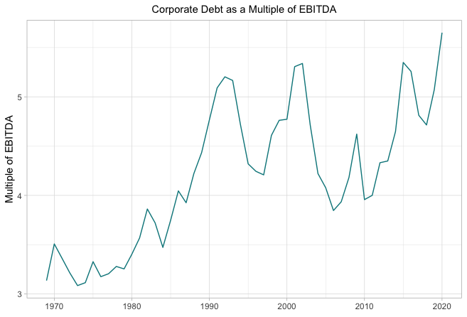

10 Institutional Investors
10.1 Pension Funds
Braun
Rather than financing entrepreneurs and fostering growth, pension money has “[inflated] capital markets in which unproductive takeover and corporate restructuring activity flourishes, while industrial production and employment activity stagnate.”
At the same time, their capital feeds an asset management sector geared toward capitalizing an ever-increasing share of economic activity, thus expanding the universe of investable assets.
It is “never noticed” by advocates of market provision “that financial markets are not large enough to support welfare transfers.”
Invariably, therefore, the supply of pension sav- ings in search of investment outstrips demand for financing from the non-financial sector (firms, households, government). This mis- match means that pension capital contributes to asset price inflation and to declining yields in established, “conservative” asset classes, which in turn gives pension funds a strong incentive to lobby state and federal governments to allow them to move into high-risk investment strate- gies and asset classes. In this effort, they will invariably be supported by the asset manage- ment sector.
Pension funds’ asset composition has steadily moved from public, local, and development- oriented investments to more private, global, and predatory investments.
In a system in which financial return is structurally linked to predation, exercising labor power through capi- tal stewardship is doomed to fail. Unlocking the progressive promise of labor’s capital requires a macro-financial regime that strictly regulates finance and that allows for greater economic democracy. The public would play a much greater role in credit creation and allocation, labor’s capital would be uncoupled from the for-profit asset management sector, and employee equity funds and other forms of mutual ownership would institutionalize profit- sharing and co-determination at the firm level. 35 On the transition path to such a “real utopia,” funded pensions appear as an obstacle rather than a stepping stone because they create a sequencing problem—things would have to get worse for labor’s capital before they get better for labor.
Braun (2021) Fueling Financialization: The Economic Consequences of Funded Pensions (pdf)
10.2 ESG 2.0
Segal
How Institutional Investors Encourage Corporations Bad Behavior
Wittingly or unwittingly, pensions and endowments’ investment strategies aid and abet activities that make the financial system more fragile.
The growing scale of institutions and the large amounts of money they need to deploy into high-risk investments is leading to consolidation among asset managers, higher global debt levels, short-term corporate behavior, and market instability.
Institutions’ investment strategies are in conflict with environmental, social, and governance goals to which they are increasingly committing.
Pension funds, insurance companies, sovereign wealth funds and others need to deploy large amounts of capital efficiently because they themselves are so big.
Institutions’ only option in many cases is to put billions of dollars to work in the largest public and private companies, Rothenberg explained. That results in companies, for example, taking on unsustainable amounts of debt.
There are incentives to layer on debt, much of which is supplied by capital markets and the shadow banking sector.
Ironically, institutional investors want to integrate ESG into their process, but they also contribute to corporate consolidation and huge debt burdens. Institutional investors are essentially contributing to some of their own problems in the way they allocate capital to leveraged loans, high-yield loans, collateralized loan obligations and other higher risk products.
All of this adds to global systemic risks. Unchecked increases in corporate debt result in increased systematic market risk that boomerangs back to investors and their portfolios Existing approaches like Modern Portfolio Theory and ESG or impact investing frameworks don’t focus on these potentially negative effects.
Perversely, as major central banks globally respond to the current crisis with rock bottom interest rates and new rounds of quantitative easing (QE), investors and companies are further incentivized to increase their exposure to high-risk debt and inflated asset valuations — a situation that leaves society and markets vulnerable to a rise in interest rates or other unplanned challenges
Segal - Comment - Instititional Investor
Rothenburg
Many of our existing ESG and impact investing frameworks focus on issues at the portfolio company level, but they do not take into account potential negative impacts from capital structures and investors’ influence in shaping them. Asset allocation strategies can be in conflict with ESG objectives.
The conflict materializes in various interconnected ways, particularly from institutional investors’ role in increasing global debt levels and fund manager and corporate consolidation.
For long-term, diversified institutional investors, or “Universal Owners” of the market, these dynamics eventually translate into lower financial returns. For workers and communities, these dynamics translate into greater precarity and inequality.
Potential solutions focus on diversifying asset allocation to more regenerative investment structures and asset classes, building an enabling environment through adjustments to team incentive structures, performance reviews, benchmarking and valuation methodologies, and field-building.
Over the past decades, institutional investors have migrated up the risk-return spectrum to asset classes with higher yields. Investor allocations to private equity (PE), venture capital (VC), private debt (PD), high yield bonds (HYBs), leveraged loans (LLs), and collateralized loan obligations (CLOs), for instance, have been growing steadily in response to a number of trends. While such shifts in asset allocation may suit near-term goals, such as meeting actuarial targets, this institutional allocation to higher risk asset classes has also meant increased global debt burdens, corporate and fund manager consolidation, and risk across capital structures, resulting in fragility for companies, the real economy, and the stability of financial markets. The resulting risks are therefore shared not only by investors, but also governments,workers, and communities alike.
To optimize leverage ratios, companies may prioritize debt servicing or distributions to investors at the expense of worker payrolls and benefits. Infrastructure and social infrastructure investments — such as power, water, roads, hospitals, nursing homes, housing, and cybersecurity — might be structured in such a way that provides access to end-users at unaffordable prices, or of poor quality, in order to meet investor return expectations and therefore attract capital. Weak capital structures increase the risk of restructurings or bankruptcies that are detrimental for stakeholders, such as workers. Stakeholders have increasingly raised concerns about high leverage, coined “financial engineering,” particularly in the PE asset class, for such reasons. 5 Yet studies produced over the past decades, inspired by PE, praise the discipline of debt, and due to a number of additional factors, high leverage ratios are no longer confined to the PE asset class and are prolific across public equity markets, as well.
In practice, the negative impacts of weak capital structures are typically being addressed piecemeal through company-by-company interventions that focus on corporate operations, like a game of whack- a-mole; but key roots of the problem — the investment structures themselves — are left unaddressed.
The unintended negative consequences of highly levered investments have been underexplored when it comes to ESG and impact investing frameworks and practice. Matters relating to investment structures, capital structures, leverage ratios, earnings calculations, valuation methodologies, benchmarking approaches, and resulting asset allocation and portfolio construction are not typically within the realm of ESG-related responsibilities.
Too much leverage is dangerous for all stakeholders. While leverage looks like a neutral, bilateral accelerant, it actually reduces financial resiliency at the very times when it might be most needed.
Systemic inequality has been shown to result in economic decline.
Neither Modern Portfolio Theory (MPT) nor ESG or impact investing frameworks currently include a focus on potential negative impacts stemming from investment structures.
Corporate debt burdens and leverage ratios are historically high, covenants are light, and defaults and bankruptcies are being held at bay by government support (e.g. through fiscal and monetary policy) – which is also funded by debt, though at the sovereign level.
Corporate funding dynamics have changed since the Global Financial Crisis (GFC), when banks came under heavy regulation that caused them to restrict lending to smaller clients. Capital markets, or the Non-bank Financial Intermediary (“NBFI” or “Shadow Banking”) sector, has stepped in to fill this void.
The financial assets of the NBFI sector amounted to $200.2 trillion in 2019, accounting for nearly half of the global financial system in 2019, up from 42% in 2008
How Did We Get Here?
For the past two decades, institutional asset owners have significantly shifted their overall asset allocation strategy. Private markets – including PE, PD, VC, infrastructure, and real estate - as well as LLs, CLOs, and HYBs, have become much larger percentages of overall portfolios. There are a number of reasons for these changes, including, but not limited to, ongoing declines in interest rates by major global central banks, dynamics related to funding ratios of institutional investors such as pension funds, growing interest in the illiquidity premium of private markets, benchmarking practices, investor dissatisfaction with public markets, and increased opportunity for NBFIs to provide financing following banking regulations resulting from the GFC. 16 Private capital assets under management (AUM) in 2019 was approximately US$6.5 trillion, an increase of over US$4 trillion over the past ten years.
Private Equity (PE)
Investor demand is now so high for PE that many are concerned that the asset class is becoming crowded with capital.
Consolidated capital flows stems from the institutionalization of capital. Markets have evolved from being dominated by individual investors to having a large presence of institutional investors. Institutional investors now hold over 40 percent of global market capitalization of listed companies.
Institutional investors have sizable portfolios and must invest billions if not trillions of dollars. With such large chunks of capital to put to work, they often find it challenging to invest in smaller fund managers, smaller companies, and niche investment strategies due to a number of factors, such as transaction costs.
Even when small deals perform well, which data suggests that they often do, they are hard to justify because they do not meaningfully move the needle in terms of overall portfolio returns.
A well-documented negative impact of consolidated capital flows to larger fund managers is that smaller, emerging, and innovative fund managers can be starved of capital.
Institutionalization of Capital
The consolidation of capital among institutional investors is a double-edged sword. On the one hand, institutions offer individual investors professional money management with multi-disciplinary staff and robust internal infrastructure capable of constructing well-diversified portfolios. Size and scale can also allow large allocators to influence corporate governance of portfolio companies, as well as negotiate more attractive terms with fund managers. It is arguable that fees overall are reduced through these dynamics, and strong ESG practices can be better advocated for. On the other hand, since large institutions need to put significant amounts of capital to work, they often allocate to the largest managers and companies, thereby resulting in consolidation of power, profit, influence, and opportunity among a shrinking pool of asset managers and companies. 53 In order for large institutional investors to act as responsible Universal Owners and effectively manage systematic risk, it will be critical for them to evaluate their asset allocation practices for unintended negative consequences that not only impact the real economy, but also markets and their long-term portfolios.

This high-risk debt is not limited to private companies. A recent Forbes article highlights how, “some of the biggest firms in the United States… have binged on low interest debt. Most of them borrowed more than they needed, often returning it to shareholders in the form of buybacks and dividends. They also went on acquisition sprees.”
From the corporate perspective, historically cheap credit due to low interest rates is attractive, particularly when combined with the current tax deductibility of interest expense, studies suggesting that highly leveraged capital structures do not negatively impact stock prices, and arguments that debt adds discipline to corporate management. Yet debt and common uses of funds can increase risk for other stakeholders. M&A has been shown to contribute to corporate consolidation which can stifle SMEs, innovation, suppliers, the quality and affordability of goods and services, labor’s bargaining power, and diversification for institutional investors. There is significant literature that explores negative impacts of share buybacks in public companies, given the links with high executive compensation and that cash paid to executives and shareholders can deter from reinvestment in the company, the quality of goods and services, and the workforce. In PE-backed companies, high leverage from acquisitions and dividend recapitalizations can push companies to cut costs related to quality jobs and jeopardize the quality and affordability of goods and services.
As central banks around the world doubled down on low interest rates and QE, investors responded by increasing portfolio allocation to higher risk and yielding asset classes.
The combination of QE and low interest rates with corporate consolidation and high inequality may well be creating challenges to long-term economic growth, as well as introducing potential drivers of instability for aggregate demand.
Rothenberg (2021) ESG 2.0 - Measuring & Managing Investor Risks Beyond the Enterprise-level (pdf)